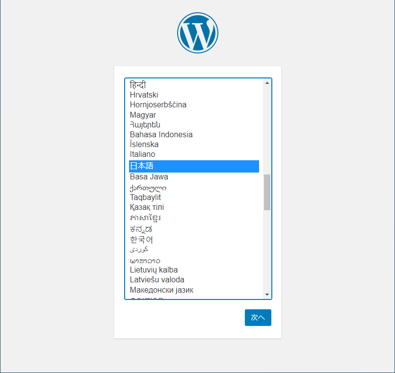
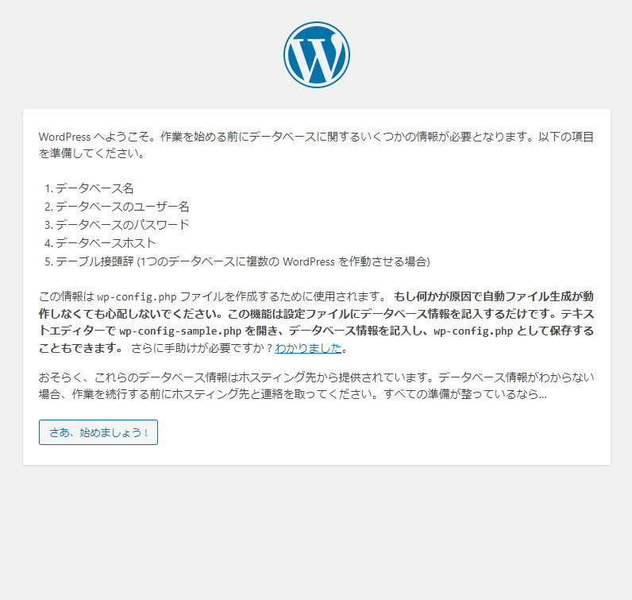
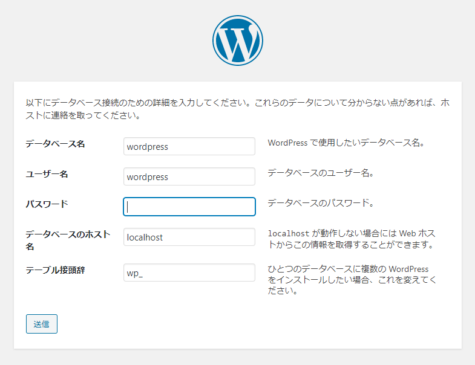
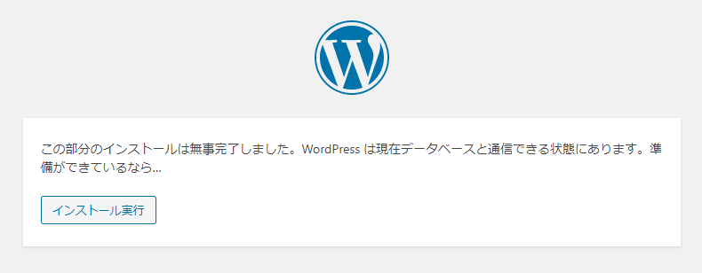
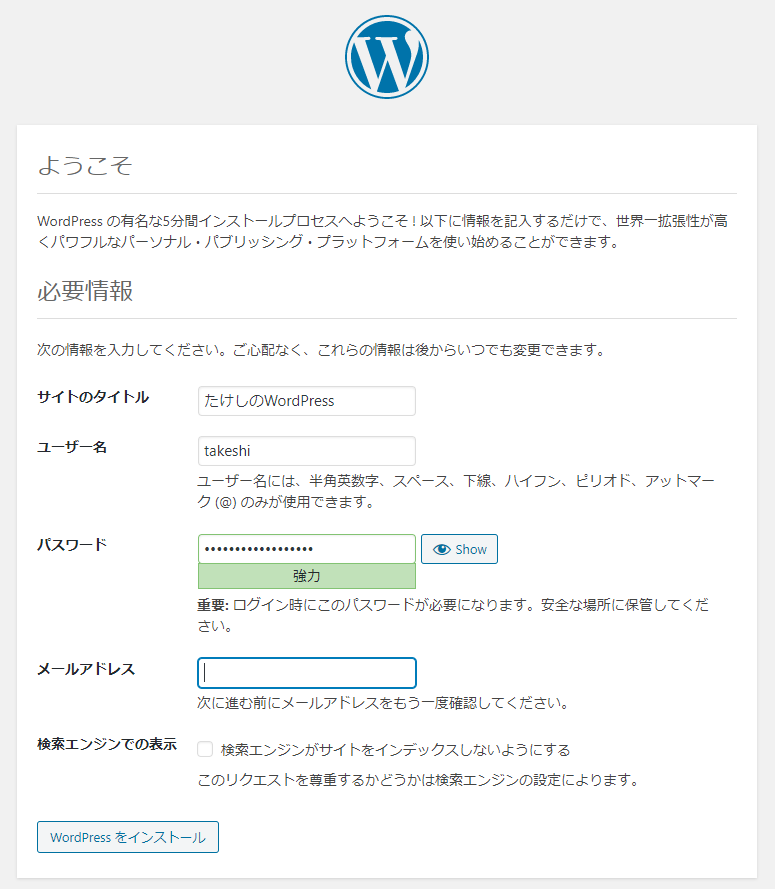
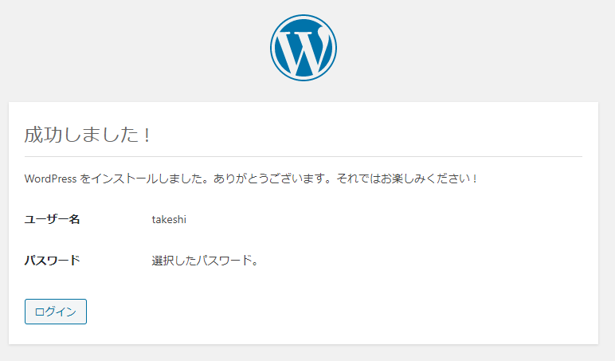
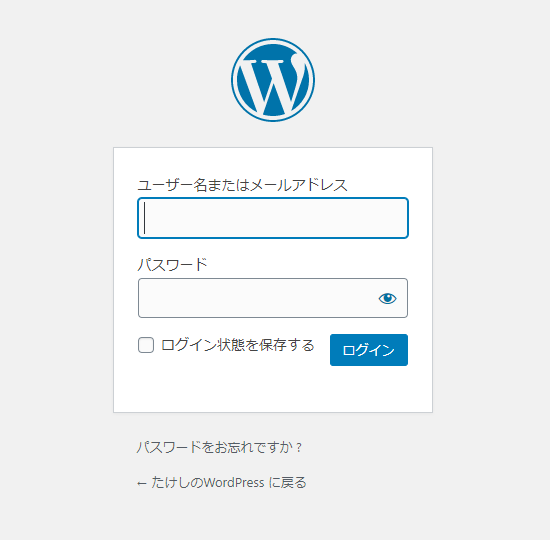
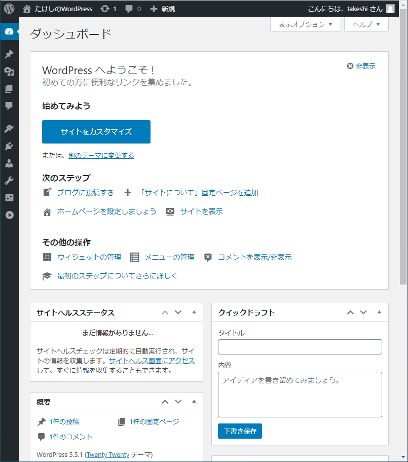
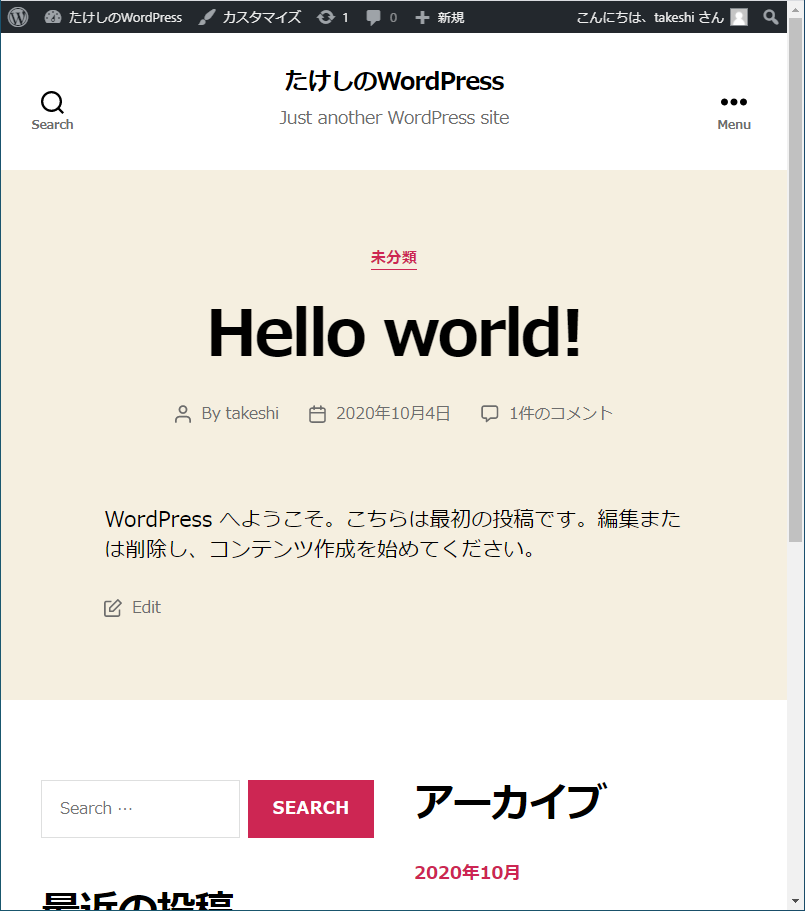

ローカル（PC側）
リモート（Raspberry Pi）
もうすでにWebサーバーとしてNginx、そしてPHPが入っているものとする。
WordPressは記事の保存にいちいちファイルを作らず、DB（データベース）を使って保存していく。WordPressに必要なDBシステムがMySQLというもので、オープンソースかつ非商用なら無料。さらにそのMySQLから派生したのがMariaDBで、システムとしてはMySQLとほぼ同じ。多分。
MySQL自体はソフトウェアの一つだが、起動すると「ログイン」をしてDBモニターという状態になる。DBモニターが起動しているとき、DBの作成や削除などの操作ができる。
リモート上で
$ sudo apt install mariadb-server -yMariaDBはMySQLの一種なので、mysqlコマンドで起動できる。ただ、初期ではrootユーザー出ないと立ち上がらない。バージョンは10.3らしい。
x$ sudo mysqlWelcome to the MariaDB monitor. Commands end with ; or \g.Your MariaDB connection id is 53Server version: 10.3.23-MariaDB-0+deb10u1 Raspbian 10Copyright (c) 2000, 2018, Oracle, MariaDB Corporation Ab and others.Type 'help;' or '\h' for help. Type '\c' to clear the current input statement.MariaDB [(none)]>quitと打てば終了できる。
xxxxxxxxxxMariaDB [(none)]> quitBye今はパスワードも何も設定されていないので、ちゃんと設定をする。
xxxxxxxxxx$ sudo mysql_secure_installation以下、対話形式で設定をしていく。
最初はrootユーザーのパスワードを聞かれる。と言ってもこのrootユーザーはRaspberry Piのものではなく、MariaDB内の独自のユーザー。現在は何も設定していないので、空欄のままエンター。
xxxxxxxxxxNOTE: RUNNING ALL PARTS OF THIS SCRIPT IS RECOMMENDED FOR ALL MariaDBSERVERS IN PRODUCTION USE! PLEASE READ EACH STEP CAREFULLY!In order to log into MariaDB to secure it, we'll need the currentpassword for the root user. If you've just installed MariaDB, andyou haven't set the root password yet, the password will be blank,so you should just press enter here.Enter current password for root (enter for none):
次にrootユーザー用のパスワードを設定するかと聞かれるので、大文字のYを入力しエンター。パスワードを設定する。
※ここでのパスワード設定は意味無い。まあ一応とりあえず入力。詳しくは解説で。
xxxxxxxxxxSetting the root password ensures that nobody can log into the MariaDBroot user without the proper authorisation.Set root password? [Y/n] YNew password:Re-enter new password:
匿名ユーザーを禁止する。匿名ユーザーとはテスト用のユーザーだそうだ。Yを入力しエンター。
xxxxxxxxxxBy default, a MariaDB installation has an anonymous user, allowing anyoneto log into MariaDB without having to have a user account created forthem. This is intended only for testing, and to make the installationgo a bit smoother. You should remove them before moving into aproduction environment.Remove anonymous users? [Y/n] Y
localhost以外からのMySQLへのログインを禁止するかどうか。Yを入力しエンター。
xxxxxxxxxxNormally, root should only be allowed to connect from 'localhost'. Thisensures that someone cannot guess at the root password from the network.Disallow root login remotely? [Y/n] Y
testという名前のデータベースがテスト用にあるらしいけど、誰でもアクセスできるので削除するかどうか聞かれる。Yを入力してエンター。
xxxxxxxxxxBy default, MariaDB comes with a database named 'test' that anyone canaccess. This is also intended only for testing, and should be removedbefore moving into a production environment.Remove test database and access to it? [Y/n] Y
これまでの設定を反映させるかどうか。Yを入力しエンター。
xxxxxxxxxxReloading the privilege tables will ensure that all changes made so farwill take effect immediately.Reload privilege tables now? [Y/n] Y
設定終了。
xxxxxxxxxxAll done! If you've completed all of the above steps, your MariaDBinstallation should now be secure.Thanks for using MariaDB!
再度DB内にログイン。
xxxxxxxxxx$ sudo mysql以下を打つとtakeshiユーザーが、全権限付きで追加される。本来はすでに登録されているユーザーに対する権限追加コマンドだけど、ユーザーがDB内に存在しない場合自動で作られるみたい。
xxxxxxxxxxMariaDB [(none)]> GRANT ALL PRIVILEGES ON *.* TO 'takeshi'@'localhost' IDENTIFIED BY '(MariaDB用のパスワード)';変更した権限情報を有効にする。
xxxxxxxxxxMariaDB [(none)]> FLUSH PRIVILEGES;WordPressが読み書きするためのデータベースを作る。
xxxxxxxxxxMariaDB [(none)]> create database wordpress;Query OK, 1 row affected (0.001 sec)後でWordPressの設定で出てくるけど、WordPressがMariaDBにログインしてデータを取ってこれるようにするため、専用のDB内ユーザーを作っておく。
適当にwordpressユーザーとする。
xxxxxxxxxxMariaDB [(none)]> GRANT ALL PRIVILEGES ON wordpress.* TO 'wordpress'@'localhost' IDENTIFIED BY '(MariaDB内のwordpressユーザーのパスワード)';MariaDB [(none)]> FLUSH PRIVILEGES;いよいよ本体をインストール。前回の記事で作ったwordpressblogディレクトリに移動し、WordPress本体をダウンロード、展開して中身をwordpressblogディレクトリに移し、残ったゴミを削除。
xxxxxxxxxx$ cd ~/www/html/wordpressblog$ sudo wget http://wordpress.org/latest.tar.gz$ sudo tar xzf latest.tar.gz$ sudo mv wordpress/* .$ sudo rm -rf wordpress latest.tar.gz展開されたファイルを確認してみる。
xxxxxxxxxx$ tree -L 1.├── index.php├── license.txt├── readme.html├── wp-activate.php├── wp-admin├── wp-blog-header.php├── wp-comments-post.php├── wp-config-sample.php├── wp-content├── wp-cron.php├── wp-includes├── wp-links-opml.php├── wp-load.php├── wp-login.php├── wp-mail.php├── wp-settings.php├── wp-signup.php├── wp-trackback.php└── xmlrpc.php3 directories, 16 files所有者を変えておいた方がいいらしいので変える。
xxxxxxxxxx$ sudo chown -R www-data: .これが無いと動かんらしい。
xxxxxxxxxx$ sudo apt install php-mysql -yブラウザのURL欄にhttp://(Raspberry PiのIP)/wordpressblogと打つ。

起動した。さあ、始めましょう！をクリック。

データベース接続のための詳細入力。ユーザー名はさっき作ったWordPress専用のMariaDB内ユーザー。パスワードも入力する。

準備ができているならインストール実行。

ブログのタイトル、WordPressにログインするためのユーザー名とパスワード、メールアドレスを入力。

インストール成功。

設定したユーザー名とパスワードを使ってログイン。

管理画面。

見た目をチェック。

ちゃんと動いているらしい。
rootユーザーにパスワードを設定しても意味無いのはなぜか。ぶっちゃけて言うと認証にunix_socketなるものを使っているから。
Using
unix_socketmeans that if you are the system root user, you can login asroot@locahostwithout a password. This technique was pioneered by Otto Kekäläinen in MariaDB packages in Debian as early as MariaDB 10.0. It is based on a simple fact, that asking the system root for a password adds no extra security — root has full access to all the data files and all process memory anyway. But not asking for a password means, there is no root password to forget (bye-bye numerous tutorials “how to reset MariaDB root password”). And if you want to script some tedious database work, there is no need to store the root password in plain text for the scipt to use (bye-byedebian-sys-maintuser).Authentication in MariaDB 10.4 — Understanding the Changes - MariaDB.org
unix_socket認証とは、Linuxに現在ログインしているユーザー名+ホスト名とDB内に登録されているユーザー名+ホスト名が一致してたらパスワードが要らないというもの。で、上の英語はざっくり言うと「rootユーザーになってる時点で何でもできるんだから、セキュリティとか要らないでしょ。だからunix_socket認証にして余計なパスワードを設定しなくてもいいようにしたよ」ということ。
でもこれはMariaDB 10.4の話。なんでRaspberry Piに10.3が入るのか、10.3でもrootの認証はunix_socketなのかは謎。
でもMariaDB内にtakeshiユーザーを全権限付きで追加した後、MariaDBにログインしてSELECT user, host, plugin FROM mysql.user;を打ってみると
xxxxxxxxxxMariaDB [(none)]> SELECT user, host, plugin FROM mysql.user;+---------+-----------+-------------+| user | host | plugin |+---------+-----------+-------------+| root | localhost | unix_socket || takeshi | localhost | |+---------+-----------+-------------+2 rows in set (0.001 sec)確かにrootユーザーにはunix_socket認証が設定されている。
試しにtakeshiユーザーにunix_socket認証でログインするように設定する。
xxxxxxxxxxMariaDB [(none)]> UPDATE mysql.user SET plugin='unix_socket' WHERE user='takeshi';Query OK, 1 row affected (0.001 sec)Rows matched: 1 Changed: 1 Warnings: 0MariaDB [(none)]> SELECT user, host, plugin FROM mysql.user;+---------+-----------+-------------+| user | host | plugin |+---------+-----------+-------------+| root | localhost | unix_socket || takeshi | localhost | unix_socket |+---------+-----------+-------------+2 rows in set (0.001 sec)DBからログアウトして再起動後、再度ログインしてみる。
xxxxxxxxxx$ sudo service mysql restart$ mysqlWelcome to the MariaDB monitor. Commands end with ; or \g.Your MariaDB connection id is 36Server version: 10.3.23-MariaDB-0+deb10u1 Raspbian 10Copyright (c) 2000, 2018, Oracle, MariaDB Corporation Ab and others.Type 'help;' or '\h' for help. Type '\c' to clear the current input statement.MariaDB [(none)]>パスワード無しで入れた。
面白いのは、unix_socket認証を設定すると、sudoコマンドでは入れない。
xxxxxxxxxx$ sudo mysql -u takeshi -pEnter password:（何を入力してもダメ、設定済みのパスワードでもダメ）ERROR 1698 (28000): Access denied for user 'takeshi'@'localhost'元に戻すには、DBにログインしてからUPDATE mysql.user SET plugin='' WHERE user='takeshi';を打つ。
xxxxxxxxxxMariaDB [(none)]> UPDATE mysql.user SET plugin='' WHERE user='takeshi';Query OK, 1 row affected (0.001 sec)Rows matched: 1 Changed: 1 Warnings: 0MariaDB [(none)]> SELECT user, host, plugin FROM mysql.user;+---------+-----------+-------------+| user | host | plugin |+---------+-----------+-------------+| root | localhost | unix_socket || takeshi | localhost | |+---------+-----------+-------------+2 rows in set (0.001 sec)MariaDB [(none)]> quitByeまたパスワードを要求されるようになった。
xxxxxxxxxx$ mysqlERROR 1045 (28000): Access denied for user 'takeshi'@'localhost' (using password: NO)※自分なりの解釈。正確な説明が知りたかったら自分で検索。
DBとは、Excelみたいなもの。中に表がいっぱい詰まってるファイルのこと。ただし、Excelは開くことすら時間がかかるのに対して、DBは目的の表をいかに素早く引き出すかに命をかけている。
また、Excelと違ってDB内に保存されている表またはデータは「直接目で確認する必要は無いもの」と割り切っているので、DBファイルを直接開くことはそもそも無い。だからPHPなどのプログラムを通してデータにアクセスする。
ただ、DBを直接操作したいときもあるので、DBを操作するだけのソフトがある。それを「モニター」と呼ぶ。
今回
xxxxxxxxxx$ sudo mysqlで起動したのが「MySQLモニター」。
DBファイルは/var/lib/mysqlに保管されている。保管場所をデータディレクトリと呼ぶ。
x
$ cd /var/lib/mysql$ ls -altotal 122952drwxr-xr-x 5 mysql mysql 4096 Oct 4 21:55 .drwxr-xr-x 45 root root 4096 Oct 4 17:57 ..-rw-rw---- 1 mysql mysql 16384 Oct 4 20:03 aria_log.00000001-rw-rw---- 1 mysql mysql 52 Oct 4 20:03 aria_log_control-rw-r--r-- 1 root root 0 Oct 4 17:58 debian-10.3.flag-rw-rw---- 1 mysql mysql 976 Oct 4 20:03 ib_buffer_pool-rw-rw---- 1 mysql mysql 12582912 Oct 4 23:06 ibdata1-rw-rw---- 1 mysql mysql 50331648 Oct 4 23:06 ib_logfile0-rw-rw---- 1 mysql mysql 50331648 Oct 4 17:58 ib_logfile1-rw-rw---- 1 mysql mysql 12582912 Oct 4 20:03 ibtmp1-rw-rw---- 1 mysql mysql 0 Oct 4 17:58 multi-master.infodrwx------ 2 mysql mysql 4096 Oct 4 17:58 mysql-rw-rw---- 1 root root 16 Oct 4 17:58 mysql_upgrade_infodrwx------ 2 mysql mysql 4096 Oct 4 17:58 performance_schema-rw-rw---- 1 mysql mysql 24576 Oct 4 20:03 tc.logdrwx------ 2 mysql mysql 4096 Oct 4 22:54 wordpressこの中のmysqlとwordpressとperformance_schemaがディレクトリになっている。
記事中で作ったのはwordpressというDBなのでwordpressディレクトリの中身を見てみる。権限の関係で中に入れないのでtreeコマンドを使用する。
xxxxxxxxxx$ sudo tree -L 1 wordpresswordpress├── db.opt├── wp_commentmeta.frm├── wp_commentmeta.ibd├── wp_comments.frm├── wp_comments.ibd├── wp_links.frm├── wp_links.ibd├── wp_options.frm├── wp_options.ibd├── wp_postmeta.frm├── wp_postmeta.ibd├── wp_posts.frm├── wp_posts.ibd├── wp_termmeta.frm├── wp_termmeta.ibd├── wp_term_relationships.frm├── wp_term_relationships.ibd├── wp_terms.frm├── wp_terms.ibd├── wp_term_taxonomy.frm├── wp_term_taxonomy.ibd├── wp_usermeta.frm├── wp_usermeta.ibd├── wp_users.frm└── wp_users.ibd0 directories, 25 files.frmファイルと.ibdファイルがセットになっているが、このセットでExcelで言う一つのシート（DBではテーブルという）を構成する。多分。
DBの簡単な操作についてはまた別の記事で解説する。